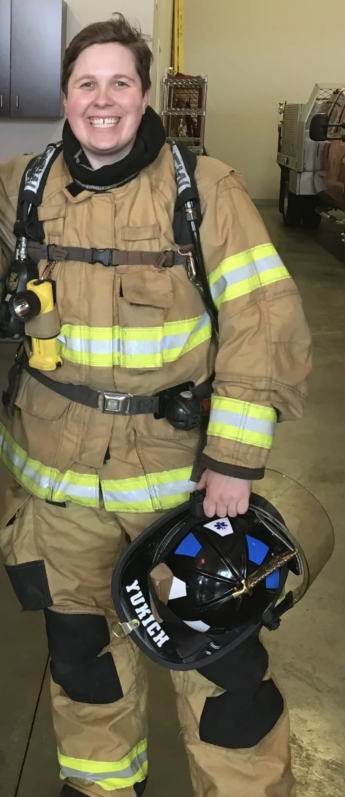

“Burnout is not a badge of honor.”—Arianna Huffington
Before becoming a therapist, I worked as a professional firefighter/paramedic and served as a medic in the Oregon Army National Guard. I’ve been through the competitive hiring processes, recruit academies, probationary periods, grueling shift schedules, injuries, and worked plenty of overtime. I have felt and witnessed how the cumulative demands of the work can change the way we feel, sleep, connect with others, function in our relationships, and show up for ourselves. Eventually, this work shapes us and takes its toll. Sometimes the hardest thing to admit is that the career we worked so hard to enter can become even harder to carry. Loving it does not make us immune to its weight.
Throughout my own healing journey, I learned that the parts of me I had been pushing aside were not going away. They were asking to be heard and witnessed. Letting someone really see me beyond the uniform meant giving them permission to sit with me in my exhaustion. A place I had spent years learning how to manage on my own.
I know firsthand how much courage it can take to let someone in. When you have spent your life being strong, asking someone to be there for you can require a kind of courage that feels unfamiliar. I see you!
My experience does not mean I have lived your story.
I would be honored to get to know you and support you in your journey!
If you or your family are looking for a therapist who understands your world on a deeper level, I look forward to meeting you! When you are ready, let’s connect.

- Firefighters
- EMT/Paramedics
- Police Officers
- Dispatchers
- Correctional Officers
- Military & Veterans
- Mental Health Professionals
- Doctors
- Nurses
- Healthcare Professionals
- Skilled & High-Risk Trades
- Executives & Business Owners
- Legal Professionals
- Aviation Professionals
- Current/Former Athletes & Coaches
You may not see your profession listed here, yet you may recognize a familiar pattern. Family systems can teach us patterns of hyper-responsibility, perfectionism, emotional suppression, people-pleasing, approval-seeking, self-judgment, fear of conflict and recreating chaotic dynamics. Maybe you learned early to stay alert, take care of others, figure things out on your own, or keep going no matter what.
If this feels familiar, you are welcome here!
Your professional title or career path does not define what you struggle with or the support you deserve.
When you are ready, let’s connect.
- Anger
- Anxiety
- Burnout
- Compassion Fatigue
- Critical Incident Exposure
- Emotional Regulation
- Emotional Shutdown
- Ethical Distress
- Family Conflict
- Founder Isolation
- Grief & Loss
- Hypervigilance
- Impatience
- Imposter Syndrome
- Irritability
- Life Transitions
- Moral Injury
- Overthinking
- Perfectionism
- Relationship Strain
- Self-Esteem
- Sleep Issues
- Trauma & PTSD
Therapy before crisis
A demanding career is a craft you develop over time. You deserve that same attention and care. Even the most rewarding careers come with difficult seasons, changing responsibilities, and challenges that can affect your job performance, physical health, mental health, relationships, and parenting.
Don't wait until everything is falling apart to ask for help. Therapy can be part of maintaining your mental health throughout the different stages of your career and life.
Crisis support
If you are experiencing a mental health crisis or are in immediate danger, please use an appropriate crisis or emergency resource rather than wait for a scheduled therapy appointment.
- Suicide & Crisis Lifeline Available 24/7 Call or text 988
- Safe Call Now First responders & their family — available 24/7 Call (206) 459-3020
- COPLINE Law enforcement & their family — available 24/7 Call (800) 267-5463
- Military Helpline Call (888) 457-4838
- Alcohol & Drug Hotline Call (800) 923-4357 or text RecoveryNow to 839863
- Crisis Text Line Available 24/7 Text OREGON to 741741

—Michele Rosenthal